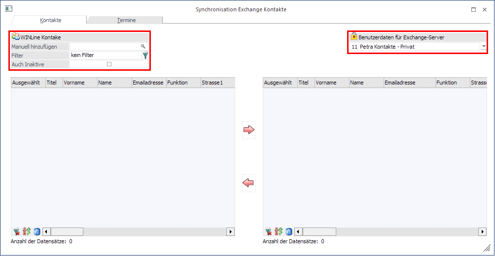
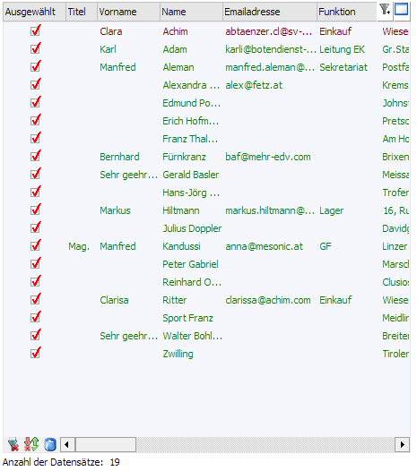
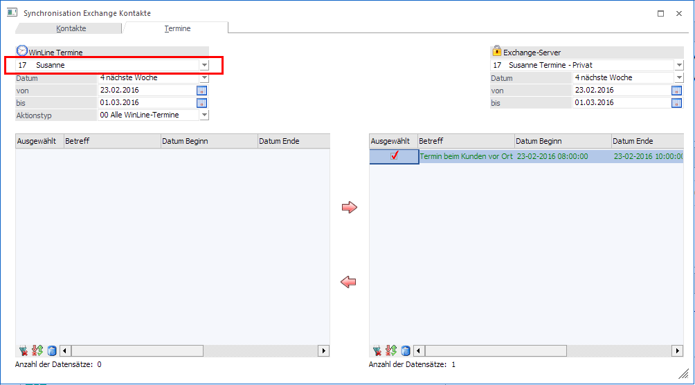
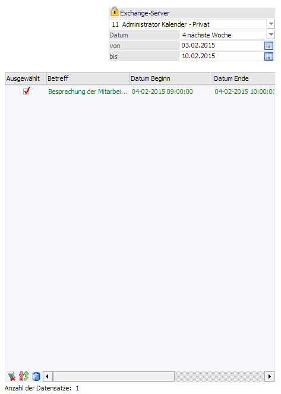

Nachdem die Exchange Verbindung angelegt wurde, kann in WinLine START unter
1 Optionen
1 Synchronisation
die WinLine Kontakte mit dem Exchange Server abgeglichen werden.

Rechts oben kann der jeweilige Exchange Server ausgewählt werden, welcher in den Einstellungen angelegt wurde. Anschließend kann mit auf "Exchange Kontakte anzeigen" oder "WinLine Kontakte anzeigen" die jeweilige darunter liegende Tabelle mit den Datensätzen befüllt werden. Bei den WinLine Kontakten gibt es die Möglichkeit die Anzeige mit einem Filter, einem bestimmten Kontakt und/oder den inaktiven Kontakten einzuschränken. So werden alle gewünschten Kontaktdaten aus dem WinLine Kontaktestamm und aus dem Exchange Kontaktestamm angezeigt.
Mit ""Vorschläge anzeigen"" werden alle Kontakte angezeigt und jene mit einem Häkchen hinterlegt, die synchronisiert werden können, weil sie entweder neu sind oder eine Änderung beinhalten.
Soll laut dern hinterlegten Logik (unter WinLine START/Parameter/Einstellungen/Exchange) eine Änderung bei einem Kontakt vorgenommen werden, so wird der betroffene Kontakt rot angezeigt.
Wird ein Kontakt als neu erkannt wird dieser grün angezeigt.

Mit ""Vorschläge durchführen"" werden alle mit einem Häkchen hinterlegten Kontakte synchronisiert.
Synchronisierung WinLine Termine
Wenn eine Exchange Verbindung angelegt ist, kann im WinLine Start unter
1 Optionen
1 Synchronisation
ein Abgleich der WinLine Termine mit dem Exchange Server durchgeführt werden.

Rechts oben kann der jeweilige Exchange Server ausgewählt werden, welcher in den Einstellungen angelegt wurde.
Links stehen folgende Optionen zur Verfügung:
ü Benutzer
Der Benutzer welcher
der Exchange-Verbindung in den Exchange-Einstellungen zugeteilt ist wird hier
standardmäßig angezeigt. Damit wird der Benutzer in die XRM-Tabelle geschrieben,
woraufhin eine Auswertung benutzerspezifisch möglich ist.
ü Admin-Benutzer
Sofern der
Abgleich als Admin-Benutzer durchgeführt wird (d.h. Dieser ist gerade in der
WinLine angemeldet und führt den Abgleich durch) steht dieser in der linken
Auswahllistbox ebenfalls zur Verfügung.
ü Auswahl ohne XRM-Tabelle
Soll
der Abgleich wie bisher - d.h. ohne XRM-Zuweisung - erfolgen so kann diese
Option ausgewählt werden.
Anschließend kann mit auf "Exchange Kontakte anzeigen" oder "WinLine Kontakte anzeigen" die jeweilige darunter liegende Tabelle mit den Datensätzen befüllt werden. Bei den WinLine Kontakten gibt es die Möglichkeit die Anzeige mit einem Filter, einem bestimmten Kontakt und/oder den inaktiven Kontakten einzuschränken. So werden alle gewünschten Kontaktdaten aus dem WinLine Kontaktestamm und aus dem Exchange Kontaktestamm angezeigt.
Mit ""Vorschläge anzeigen"" werden alle Termine angezeigt und jene mit einem Häkchen hinterlegt, die synchronisiert werden können, weil sie entweder neu sind oder eine Änderung beinhalten.
Soll laut dern hinterlegten Logik (unter WinLine START/Parameter/Einstellungen/Exchange) eine Änderung bei einem Kontakt vorgenommen werden, so wird der betroffene Kontakt rot angezeigt.
Wird ein Termin als neu erkannt wird dieser grün angezeigt:
